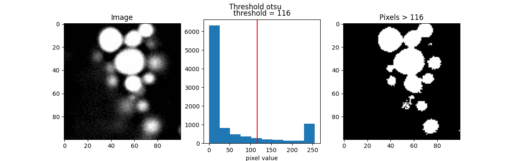
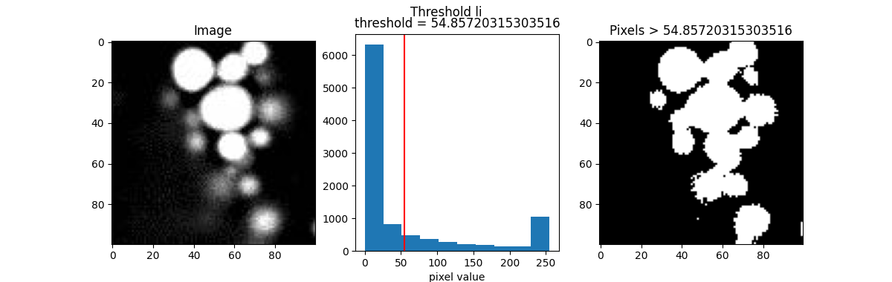
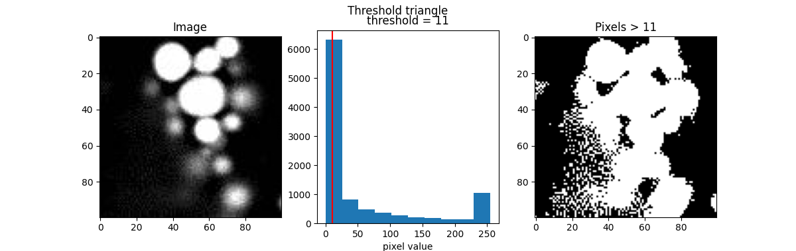

Note
Go to the end to download the full example code.
Thresholding
Typically, in the histogram of most fluorescence images, the peak appears at the lower end of the distribution. This is because the image usually consists mostly of background with values close to zero, while the signal we are interested in, which has higher values, is more sparse, resulting in fewer counts.
This can also be observed in our example image, blobs.jpeg.
from PIL import Image
import numpy as np
import matplotlib.pyplot as plt
blobs = Image.open("images/blobs.jpeg")
blobs = np.array(blobs)
plt.figure(figsize=(8,3.8))
plt.subplot(121)
plt.title('Image')
plt.imshow(blobs, cmap='gray')
plt.subplot(122)
plt.title('Histogram')
plt.hist(blobs.flatten())
plt.xlabel('pixel value')
plt.ylabel('count')
plt.annotate('background', xy=(10, 3000), xytext=(50, 5000),
arrowprops=dict(facecolor='black', shrink=0.001, width=1))
plt.annotate('signal', xy=(245, 1000), xytext=(200, 2000),
arrowprops=dict(facecolor='black', shrink=0.001, width=1))
plt.annotate('???', xy=(122, 1000), xytext=(122, 1000))
plt.show()
From the distribution above, we can see that the value on the left represents the background, and the value on the right represents the signal. But what about the values in between?
If we want to classify the pixels into background and signal (this process is called segmentation), one way is to determine the cutoff value that separates the two classes. This is essentially what “thresholding” is.
Below is a simple function to show the thresholding result by visualizing
the pixels with values greater than the threshold image > threshold.
def show_threshold(image, threshold, title=''):
plt.figure(figsize=(12,3.8))
plt.suptitle(title)
plt.subplot(131)
plt.title('Image')
plt.imshow(image, cmap='gray')
plt.subplot(132)
plt.title(f"threshold = {threshold}")
plt.hist(image.flatten())
plt.axvline(threshold, color='red')
plt.xlim()
plt.xlabel('pixel value')
plt.ylabel('count')
plt.subplot(133)
plt.title(f"Pixels > {threshold}")
plt.imshow(image > threshold, cmap='gray')
plt.show()
For example, let’s make an initial guess and set the cutoff value, or threshold, to 122. Right in the middle.
show_threshold(image=blobs, threshold=122)
The result (the image on the right), represented as a binary image, is essentially a map showing the location of the object we’re interested in (in this case, signal, which is defined by pixels with value greater than the threshold).
There are many thresholding algorithms available, so we don’t have to guess the threshold value each time. This is especially useful when the image data have different value distributions.
Here are a few popular examples.
from skimage.filters import threshold_otsu, threshold_li, threshold_triangle, threshold_isodata
th_otsu = threshold_otsu(blobs)
th_li = threshold_li(blobs)
th_tri = threshold_triangle(blobs)
th_iso = threshold_isodata(blobs)
for th_algorithm,th_value in {'otsu': th_otsu,
'li': th_li,
'triangle': th_tri,
'isodata': th_iso}.items():
show_threshold(image=blobs, threshold=th_value, title=f"Threshold {th_algorithm}")
-  116" class = "sphx-glr-multi-img"/>
-  54.85720315303516" class = "sphx-glr-multi-img"/>
-  11" class = "sphx-glr-multi-img"/>
- 115" class = "sphx-glr-multi-img"/>
Different algorithms produce different results, so it’s best to experiment with various options to find the best fit for your purpose.
Total running time of the script: (0 minutes 0.839 seconds)